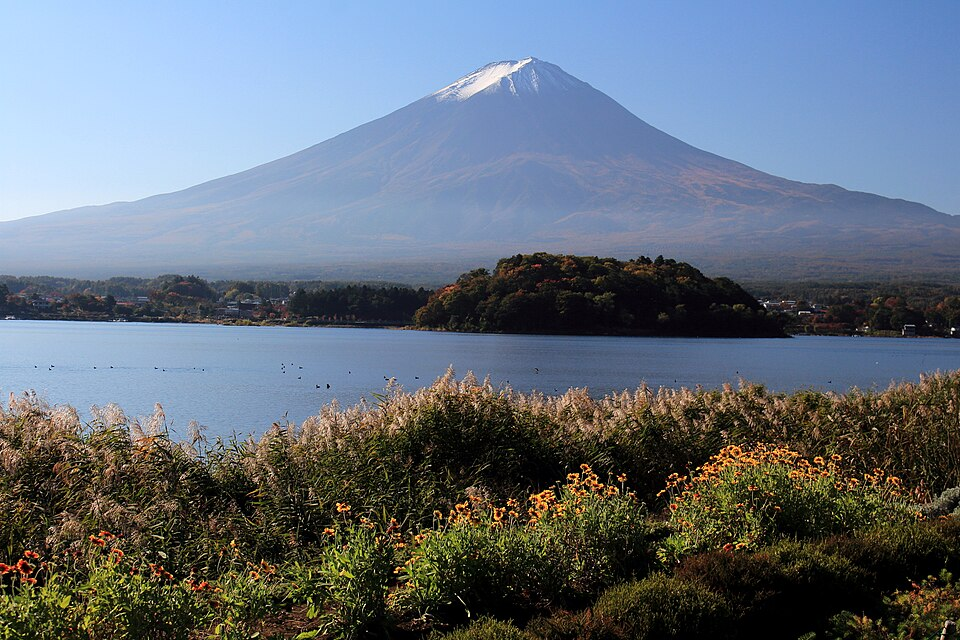河口湖＋大石公園本圖展示此景點；複合景點以其中一處具代表性的景色配圖。作者：Alpsdake作品：Mount Fuji from Oishi Park.jpg原圖與來源 · CC BY-SA 4.0縮小尺寸；網頁以 4:3 裁切顯示。裁切顯示版本沿用原圖授權。
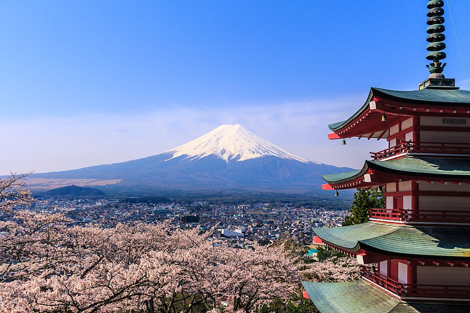新倉山淺間公園本圖展示此景點；複合景點以其中一處具代表性的景色配圖。作者：https://www.flickr.com/photos/reggiepen/作品：Chuurei-tou_Fujiyoshida_17025277650_c59733d6ba_o.jpg原圖與來源 · CC BY 2.0縮小尺寸；網頁以 4:3 裁切顯示。裁切顯示版本沿用原圖授權。
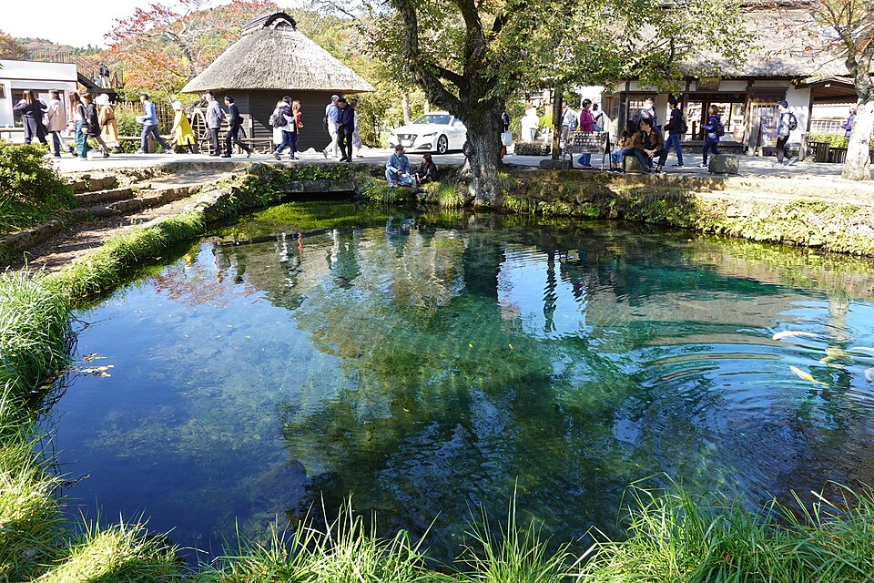忍野八海本圖展示此景點；複合景點以其中一處具代表性的景色配圖。作者：663highland作品：231028_Waku-ike_Oshino_Hakkai_springs_Oshino_Yamanashi_pref_Japan01s3.jpg原圖與來源 · CC BY-SA 4.0縮小尺寸；網頁以 4:3 裁切顯示。裁切顯示版本沿用原圖授權。
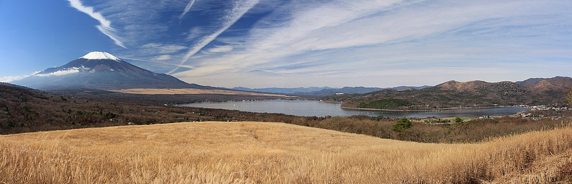山中湖本圖展示此景點；複合景點以其中一處具代表性的景色配圖。作者：Alpsdake作品：Mount_Fuji_and_Lake_Yamanaka.JPG原圖與來源 · CC BY-SA 4.0縮小尺寸；網頁以 4:3 裁切顯示。裁切顯示版本沿用原圖授權。
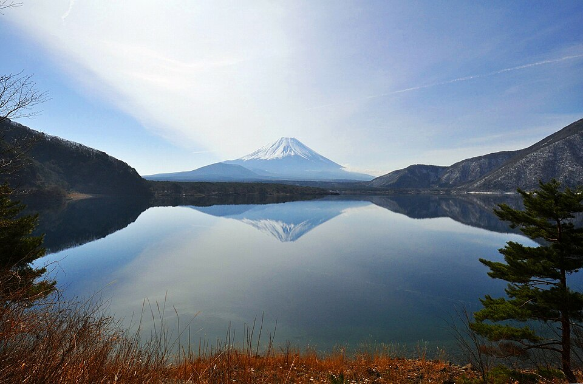本栖湖本圖展示此景點；複合景點以其中一處具代表性的景色配圖。作者：Captain76:Nikon D90+TAMRON SP10-24mm作品：Lake_Motosu03.jpg原圖與來源 · CC BY-SA 3.0縮小尺寸；網頁以 4:3 裁切顯示。裁切顯示版本沿用原圖授權。
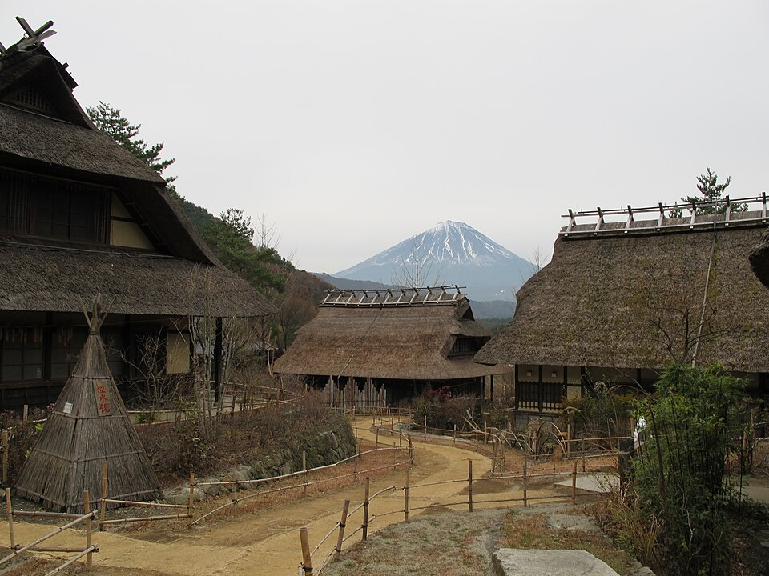西湖療癒之里根場本圖展示此景點；複合景點以其中一處具代表性的景色配圖。作者：ja:User:Masanori88作品：Saiko-iyashinosato-nenba1.JPG原圖與來源 · CC BY-SA 3.0縮小尺寸；網頁以 4:3 裁切顯示。裁切顯示版本沿用原圖授權。
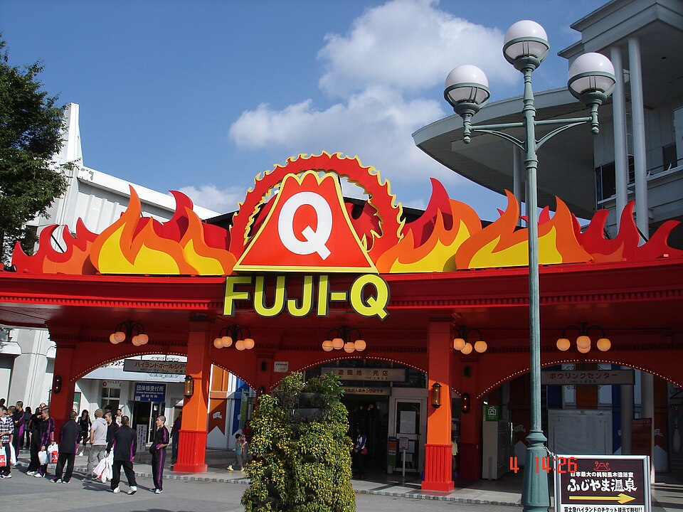富士急樂園本圖展示此景點；複合景點以其中一處具代表性的景色配圖。作者：Nayvik作品：FujiQ_Highland_MainGate.JPG原圖與來源 · CC BY-SA 3.0縮小尺寸；網頁以 4:3 裁切顯示。裁切顯示版本沿用原圖授權。
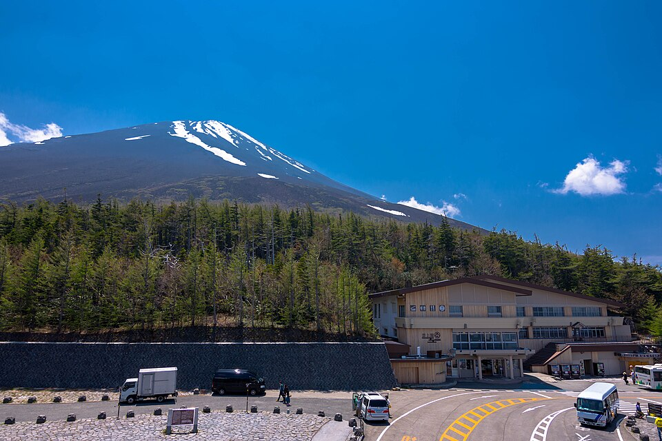富士山五合目（吉田口）本圖展示此景點；複合景點以其中一處具代表性的景色配圖。作者：Mattias Hill作品：Mount fuji 5th station.jpg原圖與來源 · CC BY-SA 3.0縮小尺寸；網頁以 4:3 裁切顯示。裁切顯示版本沿用原圖授權。
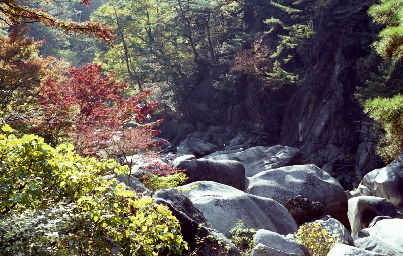昇仙峽本圖展示此景點；複合景點以其中一處具代表性的景色配圖。作者：hoge asdf作品：Shōsenkyō 01.jpg原圖與來源 · CC BY 2.0縮小尺寸；網頁以 4:3 裁切顯示。裁切顯示版本沿用原圖授權。
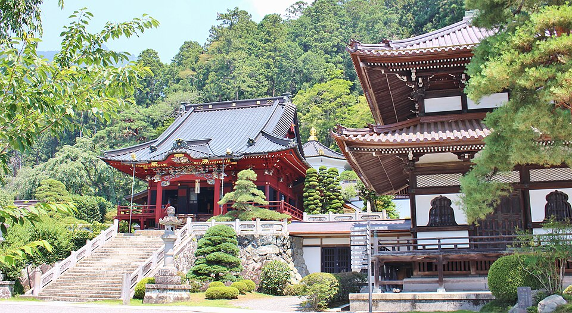身延山久遠寺本圖展示此景點；複合景點以其中一處具代表性的景色配圖。作者：Yoshio Kohara作品：身延山久遠寺_-_panoramio_(5).jpg原圖與來源 · CC BY 3.0縮小尺寸；網頁以 4:3 裁切顯示。裁切顯示版本沿用原圖授權。
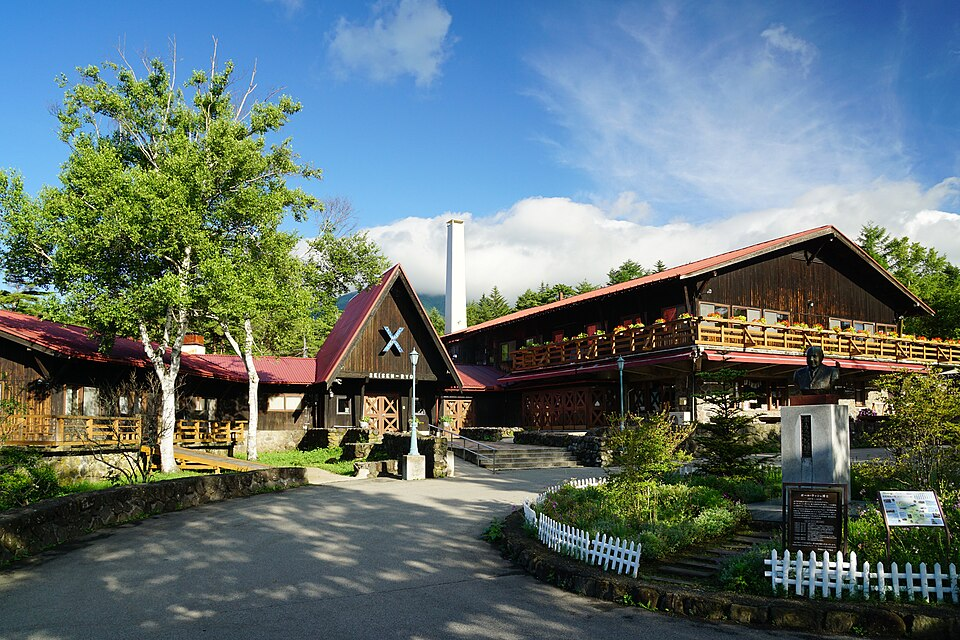清里・清泉寮本圖展示此景點；複合景點以其中一處具代表性的景色配圖。作者：663highland作品：150719_Seisenryo_Hokuto_Yamanashi_pref_Japan01s3.jpg原圖與來源 · CC BY 2.5縮小尺寸；網頁以 4:3 裁切顯示。裁切顯示版本沿用原圖授權。
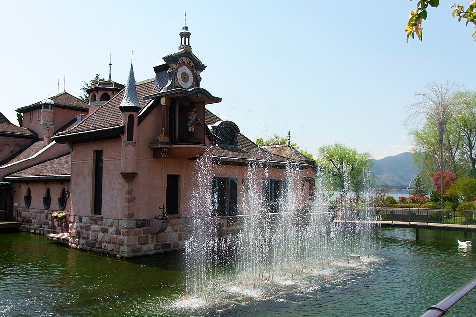河口湖音樂盒之森美術館本圖展示此景點；複合景點以其中一處具代表性的景色配圖。作者：Yamaguchi Yoshiaki作品：Fountain_show_on_the_hour_every_hour,_Kawaguchi-ko_Music_Forest_Museum_(河口湖オルゴールの森で毎正時に行われる噴水ショー).jpg原圖與來源 · CC BY-SA 2.0縮小尺寸；網頁以 4:3 裁切顯示。裁切顯示版本沿用原圖授權。
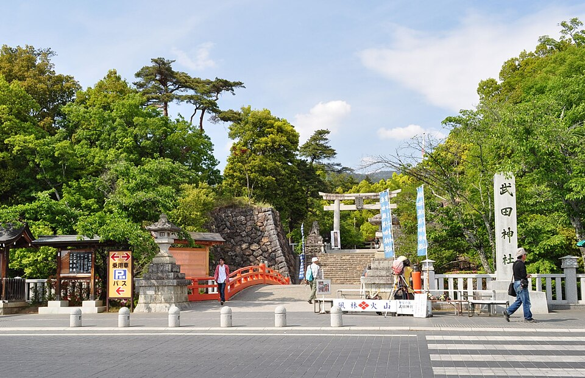武田神社本圖展示此景點；複合景點以其中一處具代表性的景色配圖。作者：江戸村のとくぞう作品：Takeda-jinja-1.jpg原圖與來源 · CC BY-SA 4.0縮小尺寸；網頁以 4:3 裁切顯示。裁切顯示版本沿用原圖授權。
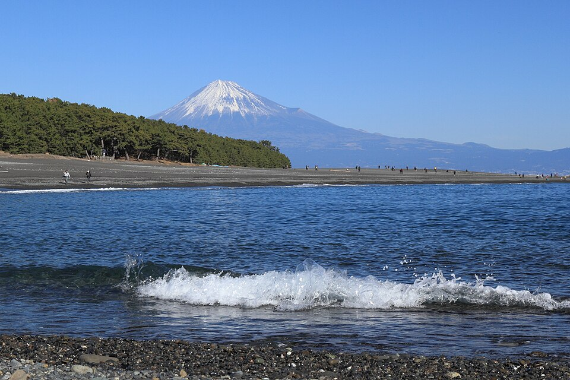三保松原本圖展示此景點；複合景點以其中一處具代表性的景色配圖。作者：xe zna作品：三保の松原,_Miho_no_matsubara_-_panoramio.jpg原圖與來源 · CC BY-SA 3.0縮小尺寸；網頁以 4:3 裁切顯示。裁切顯示版本沿用原圖授權。
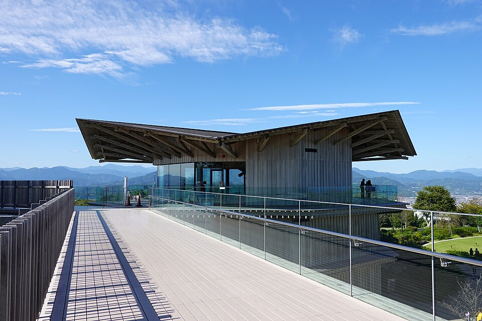日本平夢平台本圖展示此景點；複合景點以其中一處具代表性的景色配圖。作者：663highland作品：231006 Nihondaira Shizuoka Japan16s3.jpg原圖與來源 · CC BY-SA 4.0縮小尺寸；網頁以 4:3 裁切顯示。裁切顯示版本沿用原圖授權。
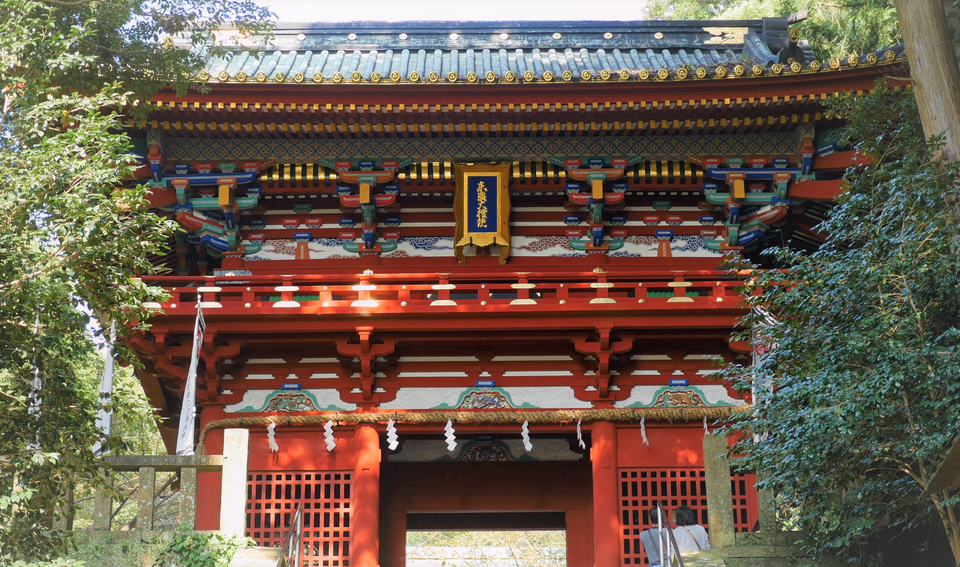久能山東照宮本圖展示此景點；複合景點以其中一處具代表性的景色配圖。作者：SHIZUOKACITYperson作品：久能山東照宮楼門.png原圖與來源 · CC BY-SA 4.0縮小尺寸；網頁以 4:3 裁切顯示。裁切顯示版本沿用原圖授權。
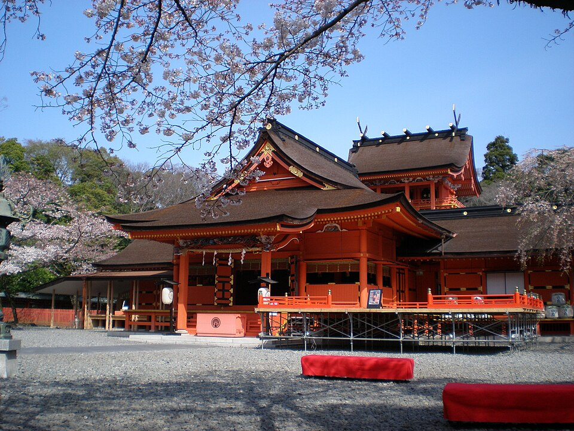富士山本宮淺間大社本圖展示此景點；複合景點以其中一處具代表性的景色配圖。作者：わたり鳥 at the Japanese language Wikipedia作品：Fujinomiya_Hongu_Sengen_Taisha_Honden.jpg原圖與來源 · CC BY-SA 3.0縮小尺寸；網頁以 4:3 裁切顯示。裁切顯示版本沿用原圖授權。
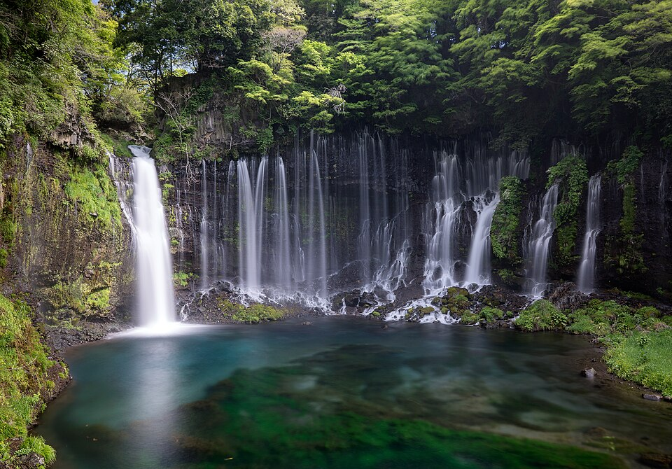白絲瀑布（富士宮）本圖展示此景點；複合景點以其中一處具代表性的景色配圖。作者：Big Ben in Japan作品：Shiraito_Falls_(34257542610).jpg原圖與來源 · CC BY-SA 2.0縮小尺寸；網頁以 4:3 裁切顯示。裁切顯示版本沿用原圖授權。
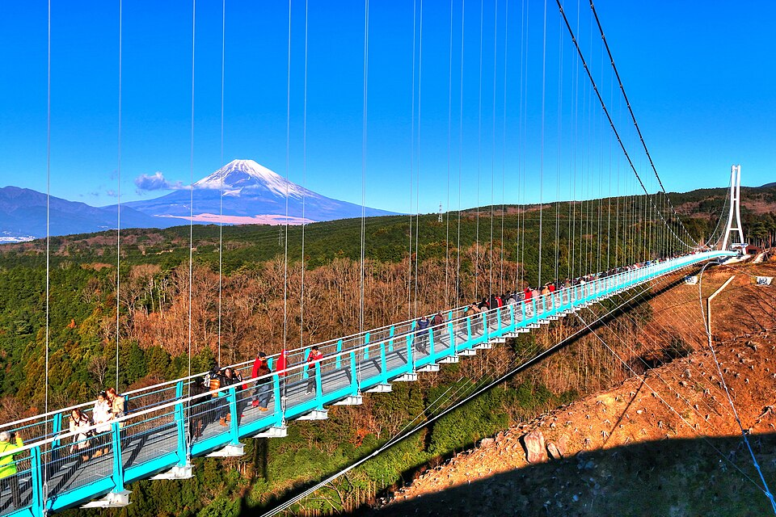三島天空步道本圖展示此景點；複合景點以其中一處具代表性的景色配圖。作者：くろふね作品：三島スカイウォーク_-_panoramio_(4).jpg原圖與來源 · CC BY 3.0縮小尺寸；網頁以 4:3 裁切顯示。裁切顯示版本沿用原圖授權。
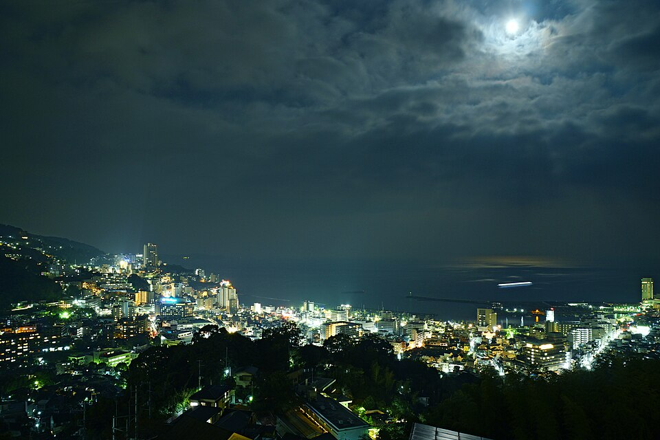熱海溫泉本圖展示此景點；複合景點以其中一處具代表性的景色配圖。作者：Photo by 663highland作品：181122_Atami_Onsen_Shizuoka_pref_Japan01s.jpg原圖與來源 · CC BY-SA 4.0縮小尺寸；網頁以 4:3 裁切顯示。裁切顯示版本沿用原圖授權。
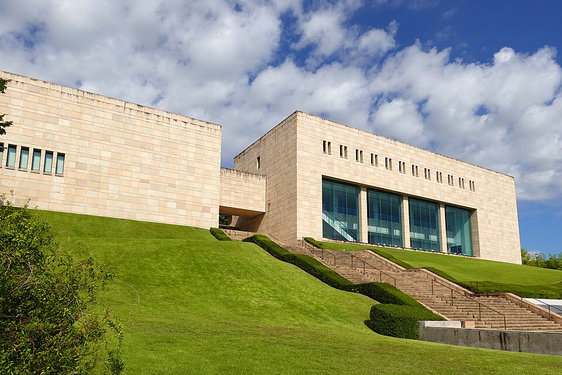MOA美術館本圖展示此景點；複合景點以其中一處具代表性的景色配圖。作者：663highland作品：231007_MOA_Museum_of_Art_Atami_Japan09s3.jpg原圖與來源 · CC BY-SA 4.0縮小尺寸；網頁以 4:3 裁切顯示。裁切顯示版本沿用原圖授權。
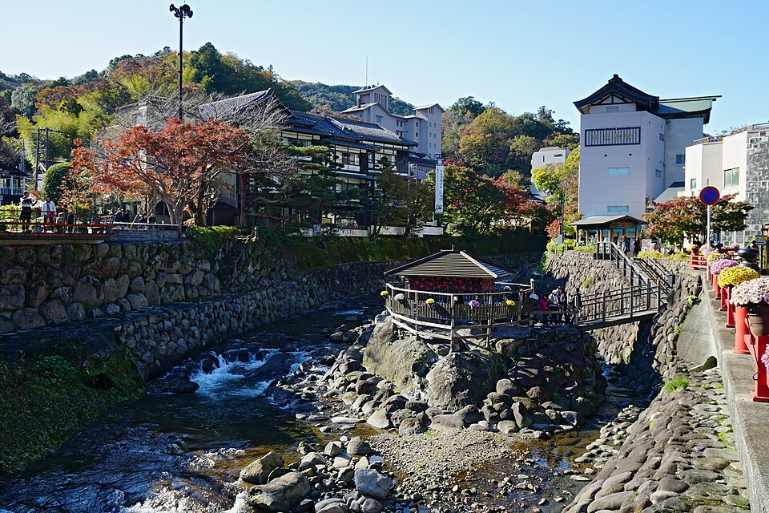修善寺溫泉本圖展示此景點；複合景點以其中一處具代表性的景色配圖。作者：Photo by 663highland作品：181124_Shuzenji_Onsen_Izu_Shizuoka_pref_Japan01s3.jpg原圖與來源 · CC BY-SA 4.0縮小尺寸；網頁以 4:3 裁切顯示。裁切顯示版本沿用原圖授權。
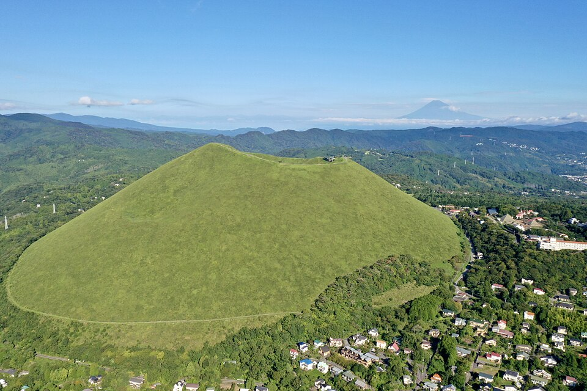大室山本圖展示此景點；複合景點以其中一處具代表性的景色配圖。作者：Charlie fong作品：Mount_Ōmuro_(Izu_Peninsula)_&_Mt.Fuji.jpg原圖與來源 · CC BY-SA 4.0縮小尺寸；網頁以 4:3 裁切顯示。裁切顯示版本沿用原圖授權。
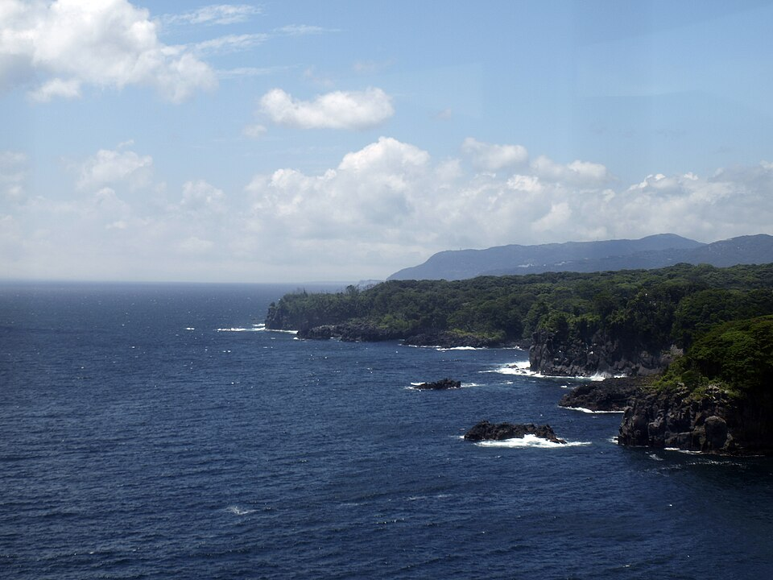城崎海岸本圖展示此景點；複合景點以其中一處具代表性的景色配圖。作者：Tomo作品：Jōgasaki_Coast_01.jpg原圖與來源 · CC BY 2.0縮小尺寸；網頁以 4:3 裁切顯示。裁切顯示版本沿用原圖授權。
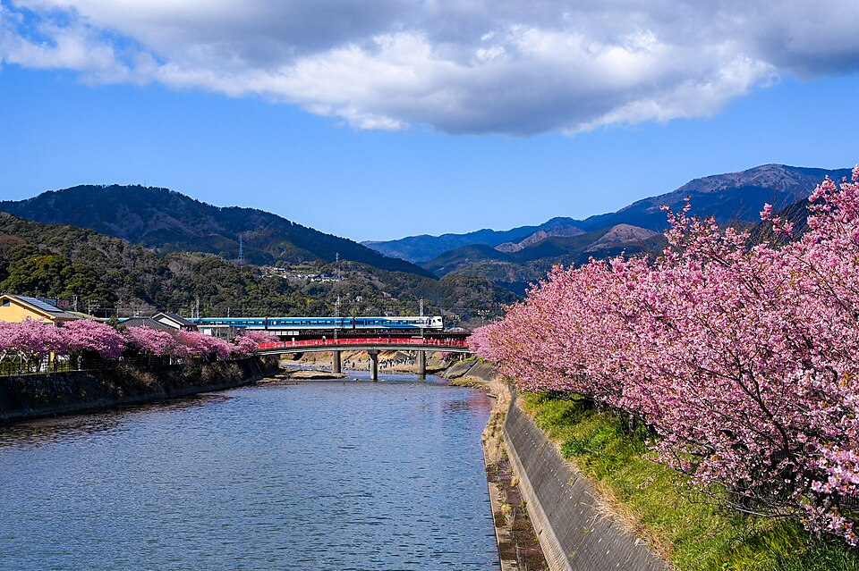河津櫻並木本圖展示此景點；複合景點以其中一處具代表性的景色配圖。作者：9689tatsuya作品：Shizuoka-Kawazu cherry blossoms and Odoriko-xl.jpg原圖與來源 · CC BY 4.0縮小尺寸；網頁以 4:3 裁切顯示。裁切顯示版本沿用原圖授權。
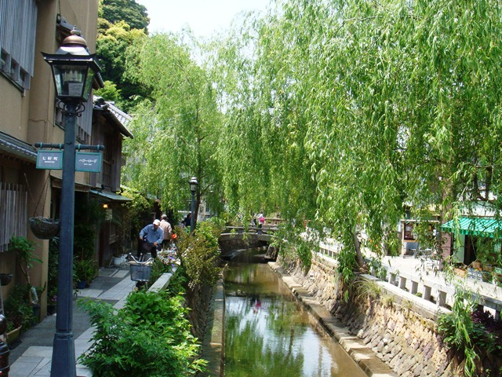伊豆下田・佩里之路本圖展示此景點；複合景點以其中一處具代表性的景色配圖。作者：User: (WT-shared) Shoestring at wts wikivoyage作品：Perry Road, Shimoda, Shizuoka, Japan.JPG原圖與來源 · CC BY-SA 4.0縮小尺寸；網頁以 4:3 裁切顯示。裁切顯示版本沿用原圖授權。
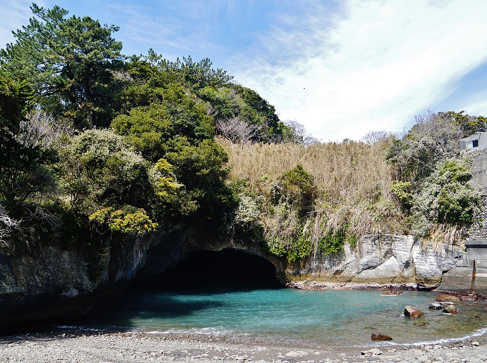堂之島天窗洞（堂ヶ島）堂之島海蝕洞入口與海岸景觀；本圖不是洞內天窗角度。作者：Zairon作品：Nishiizu Dogashima-Seehöhle 6.jpg原圖與來源 · CC BY-SA 4.0縮小尺寸；網頁以 4:3 裁切顯示。裁切顯示版本沿用原圖授權。
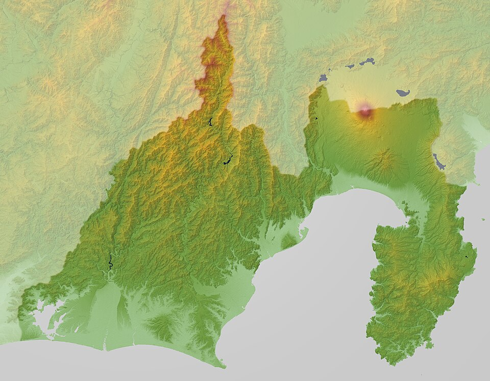寸又峽・夢之吊橋本圖展示此景點；複合景點以其中一處具代表性的景色配圖。作者：Tetsuji Sakakibara from Tokyo, Japan作品：Yume-no-Tsuribashi (40896906290).jpg原圖與來源 · CC BY-SA 2.0縮小尺寸；網頁以 4:3 裁切顯示。裁切顯示版本沿用原圖授權。
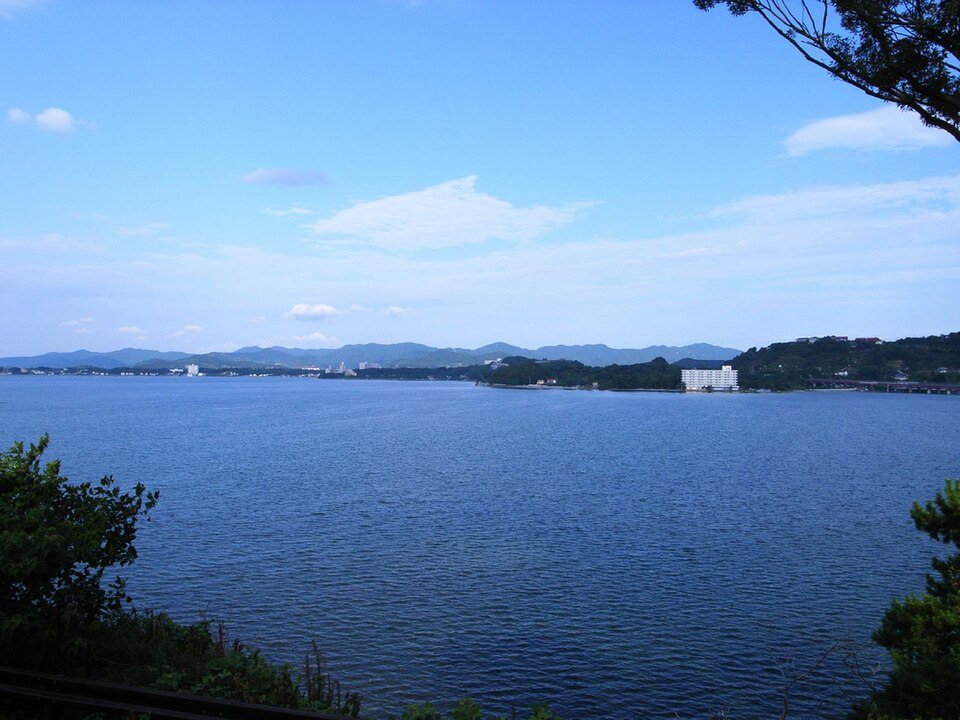濱名湖本圖展示此景點；複合景點以其中一處具代表性的景色配圖。作者：Kazuhiko Maeda from Tokyo, Japan作品：Hamanako_SA.jpg原圖與來源 · CC BY 2.0縮小尺寸；網頁以 4:3 裁切顯示。裁切顯示版本沿用原圖授權。
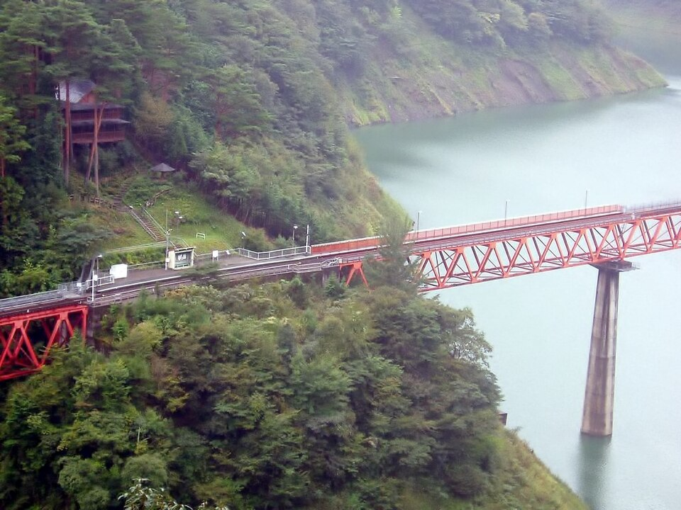大井川鐵道・奧大井湖上站本圖展示此景點；複合景點以其中一處具代表性的景色配圖。作者：Cassiopeia sweet作品：Okuoi-Kozyo-Sta.jpg原圖與來源 · Public domain縮小尺寸；網頁以 4:3 裁切顯示。裁切顯示版本沿用原圖授權。
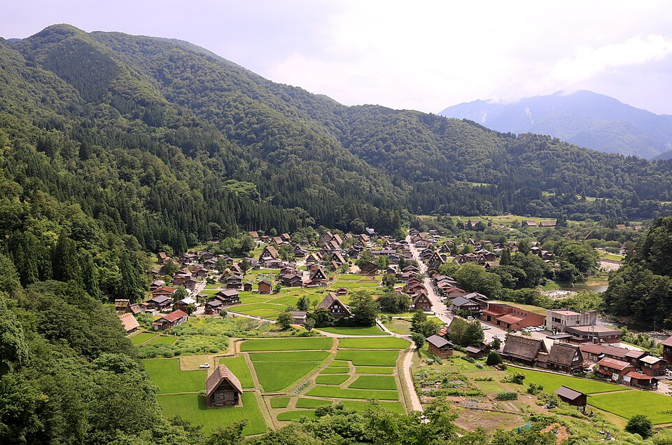白川鄉合掌村本圖展示此景點；複合景點以其中一處具代表性的景色配圖。作者：Alpsdake作品：Shirakawa-go_(2017-07-22).jpg原圖與來源 · CC BY-SA 4.0縮小尺寸；網頁以 4:3 裁切顯示。裁切顯示版本沿用原圖授權。
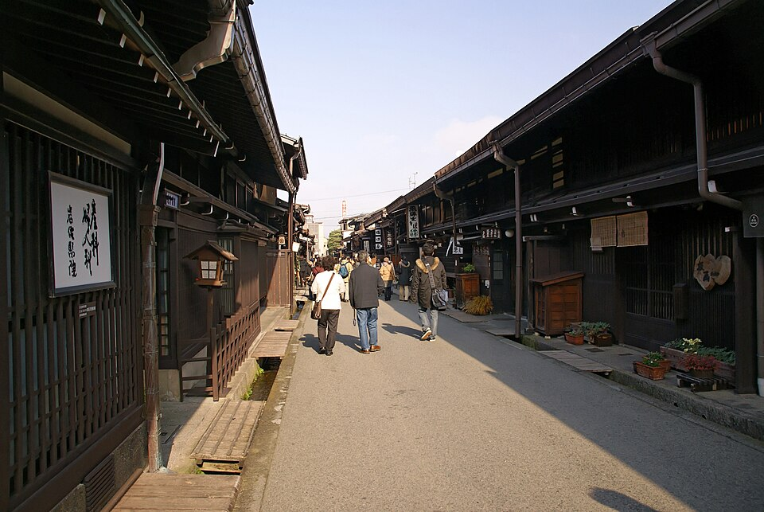飛驒高山老街本圖展示此景點；複合景點以其中一處具代表性的景色配圖。作者：663highland作品：Sanmachi_Takayama02ds3872.jpg原圖與來源 · CC BY 2.5縮小尺寸；網頁以 4:3 裁切顯示。裁切顯示版本沿用原圖授權。
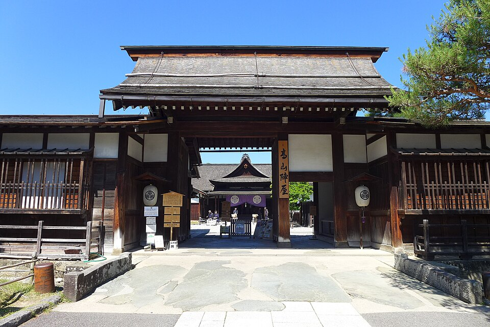高山陣屋本圖展示此景點；複合景點以其中一處具代表性的景色配圖。作者：Wpcpey作品：Takayama_Jinya_Entrance_201706.jpg原圖與來源 · CC BY 4.0縮小尺寸；網頁以 4:3 裁切顯示。裁切顯示版本沿用原圖授權。
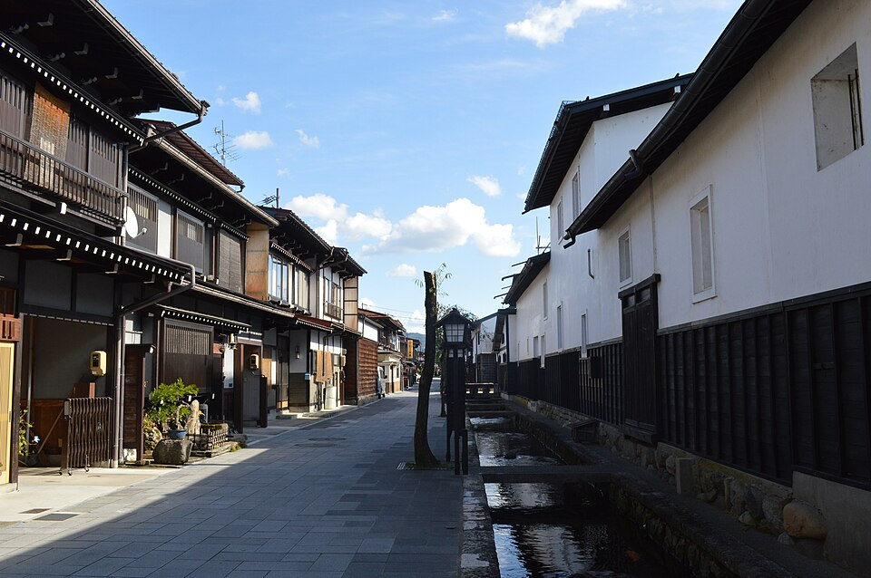飛驒古川本圖展示此景點；複合景點以其中一處具代表性的景色配圖。作者：Asturio Cantabrio作品：Hida_Furukawa_Seto_river_ac.jpg原圖與來源 · CC BY-SA 4.0縮小尺寸；網頁以 4:3 裁切顯示。裁切顯示版本沿用原圖授權。
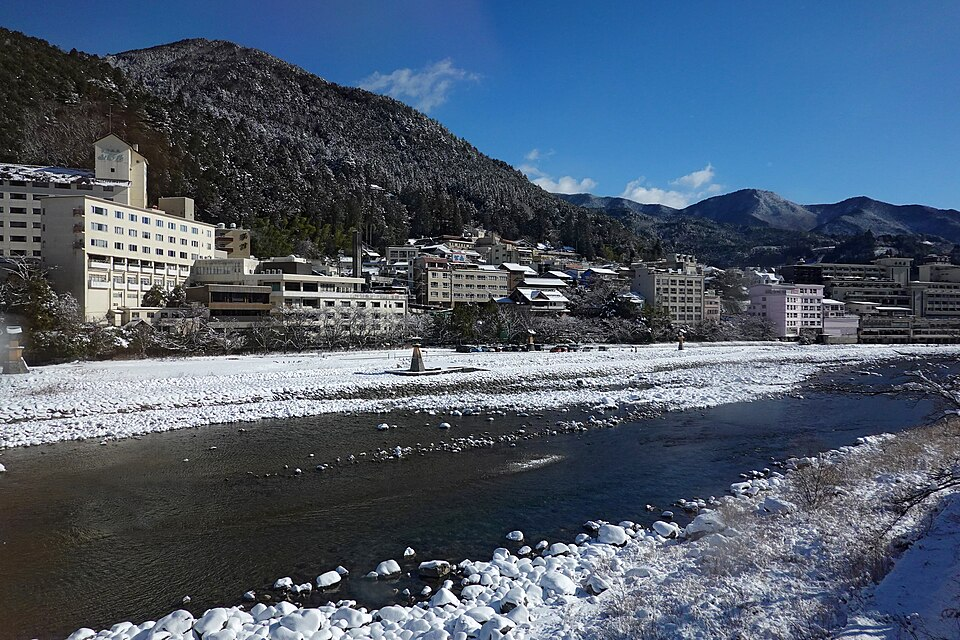下呂溫泉本圖展示此景點；複合景點以其中一處具代表性的景色配圖。作者：663highland作品：260125_Gero_Onsen_Gero_Gifu_pref_Japan01s3.jpg原圖與來源 · CC BY-SA 4.0縮小尺寸；網頁以 4:3 裁切顯示。裁切顯示版本沿用原圖授權。
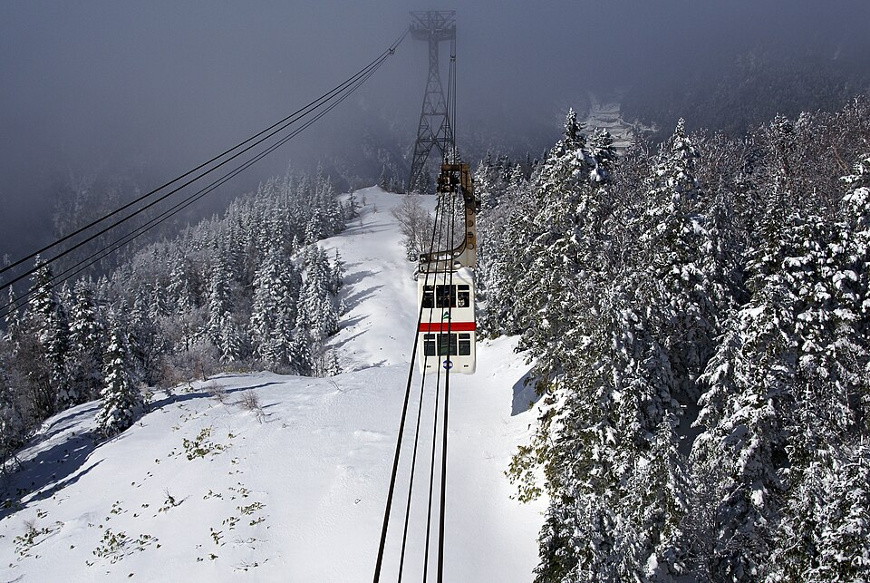新穗高纜車本圖展示此景點；複合景點以其中一處具代表性的景色配圖。作者：663highland作品：Shinhotaka_ropeway01s3200.jpg原圖與來源 · CC BY 2.5縮小尺寸；網頁以 4:3 裁切顯示。裁切顯示版本沿用原圖授權。
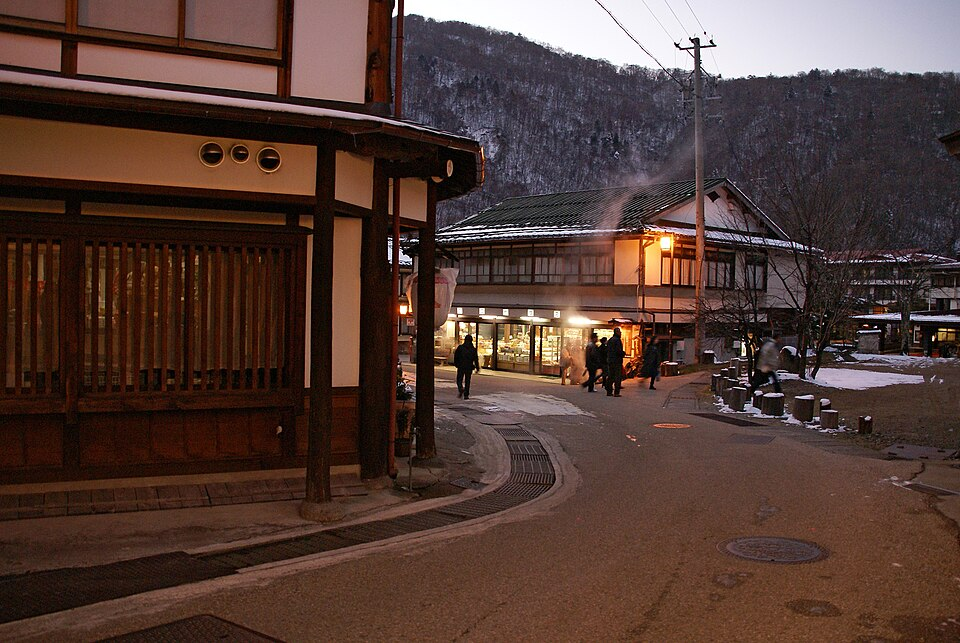奧飛驒溫泉鄉奧飛驒溫泉鄉的平湯溫泉。作者：663highland作品：Hirayu onsen04s3200.jpg原圖與來源 · CC BY 2.5縮小尺寸；網頁以 4:3 裁切顯示。裁切顯示版本沿用原圖授權。
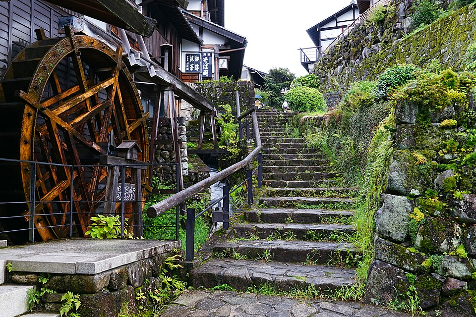馬籠宿本圖展示此景點；複合景點以其中一處具代表性的景色配圖。作者：663highland作品：220727 Nakasendo Magome-juku Nakatsugawa Gifu pref Japan01s3.jpg原圖與來源 · CC BY-SA 4.0縮小尺寸；網頁以 4:3 裁切顯示。裁切顯示版本沿用原圖授權。
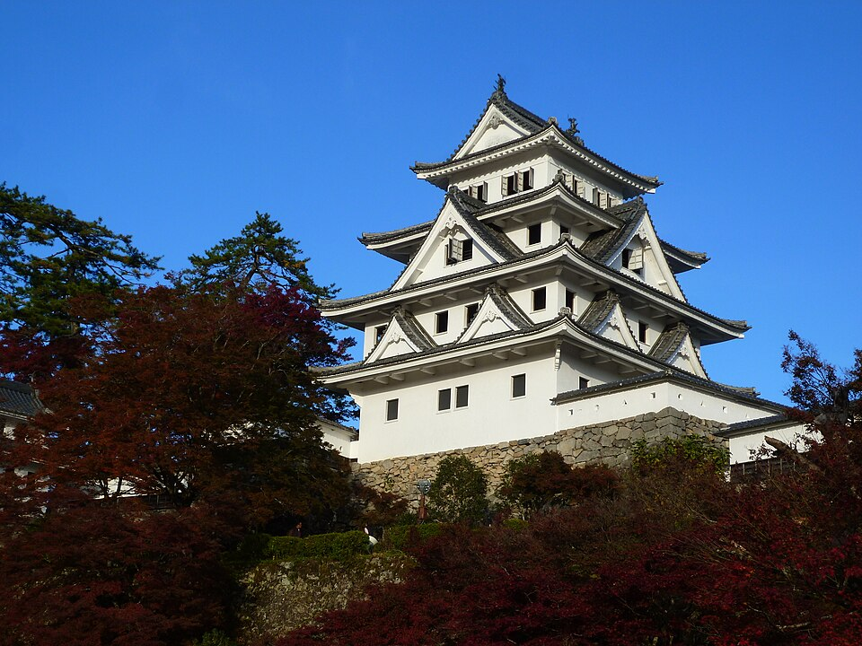郡上八幡本圖展示此景點；複合景點以其中一處具代表性的景色配圖。作者：Kitimi作品：2017年秋季の郡上八幡城.jpg原圖與來源 · CC BY-SA 4.0縮小尺寸；網頁以 4:3 裁切顯示。裁切顯示版本沿用原圖授權。
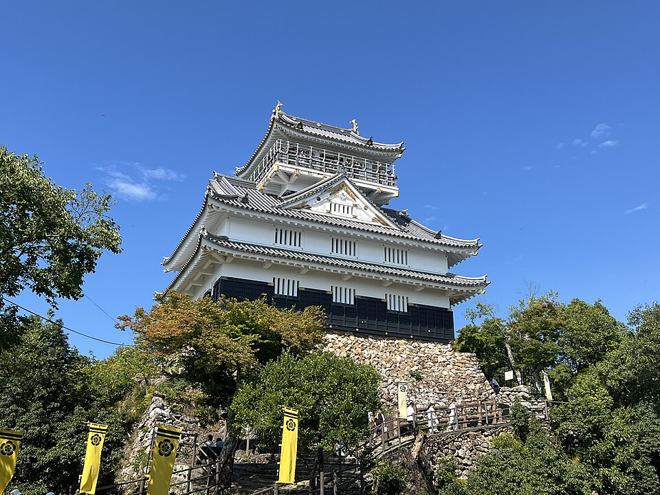岐阜城＋金華山本圖展示此景點；複合景點以其中一處具代表性的景色配圖。作者：Mont Blank rich作品：岐阜城_天守閣.jpg原圖與來源 · CC0縮小尺寸；網頁以 4:3 裁切顯示。裁切顯示版本沿用原圖授權。
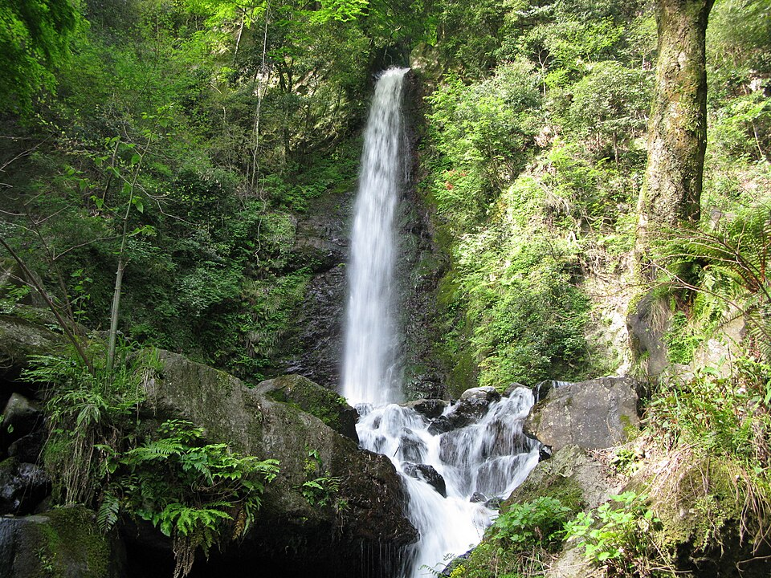養老瀑布本圖展示此景點；複合景點以其中一處具代表性的景色配圖。作者：Kikuhiko Mizusaki作品：Yoro-waterfall.JPG原圖與來源 · CC BY-SA 3.0縮小尺寸；網頁以 4:3 裁切顯示。裁切顯示版本沿用原圖授權。
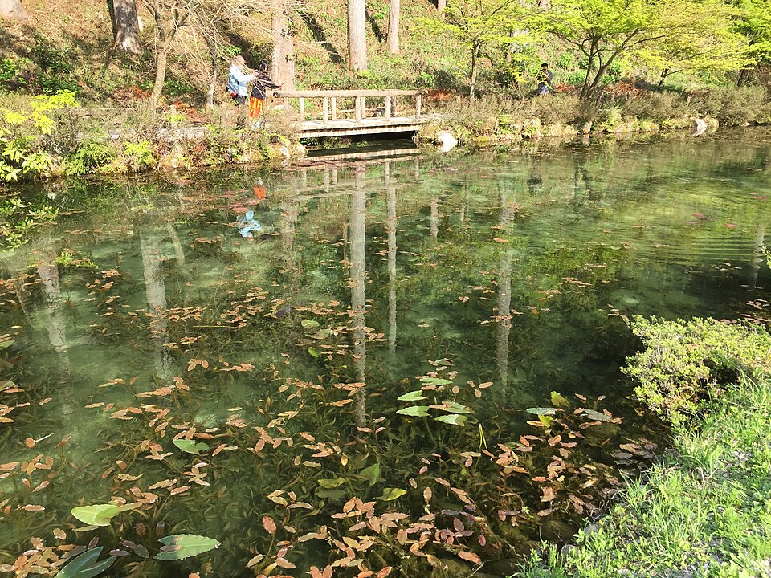莫內之池本圖展示此景點；複合景點以其中一處具代表性的景色配圖。作者：Hmori1960.earthbound作品：JPN_Monet_pond2.jpg原圖與來源 · CC BY-SA 4.0縮小尺寸；網頁以 4:3 裁切顯示。裁切顯示版本沿用原圖授權。
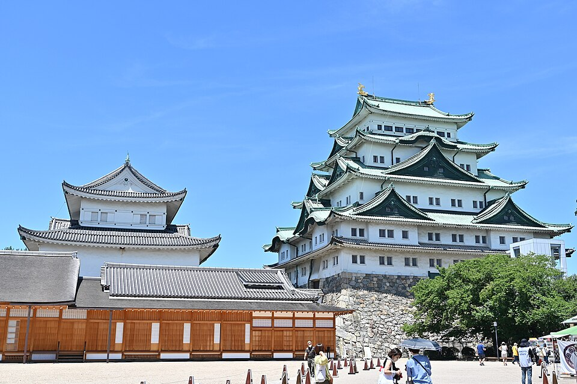名古屋城本圖展示此景點；複合景點以其中一處具代表性的景色配圖。作者：Bariston作品：Nagoya_Castle_7.jpg原圖與來源 · CC BY-SA 4.0縮小尺寸；網頁以 4:3 裁切顯示。裁切顯示版本沿用原圖授權。
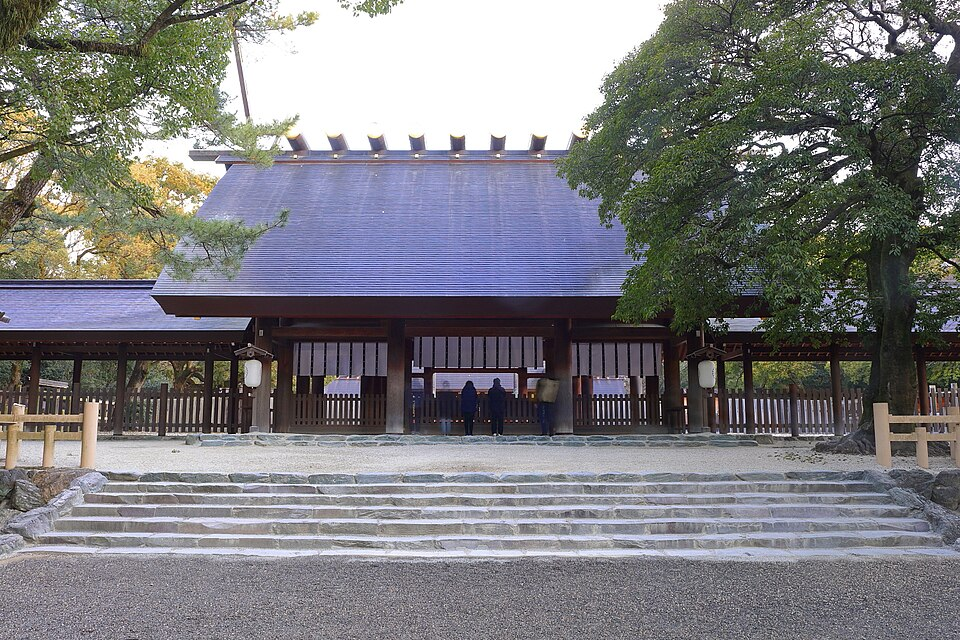熱田神宮本圖展示此景點；複合景點以其中一處具代表性的景色配圖。作者：Tomio344456作品：Atsuta-jingu_Shrine_Haiden,_Jingu_Atsuta_Ward_Nagoya_2023.jpg原圖與來源 · CC BY-SA 4.0縮小尺寸；網頁以 4:3 裁切顯示。裁切顯示版本沿用原圖授權。
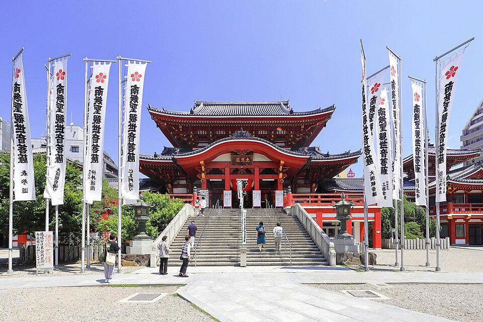大須觀音＋大須商店街本圖展示此景點；複合景點以其中一處具代表性的景色配圖。作者：Tomio344456作品：Houshou-in_Hondou,_Osu_Naka_Ward_Nagoya_2022.jpg原圖與來源 · CC BY-SA 4.0縮小尺寸；網頁以 4:3 裁切顯示。裁切顯示版本沿用原圖授權。
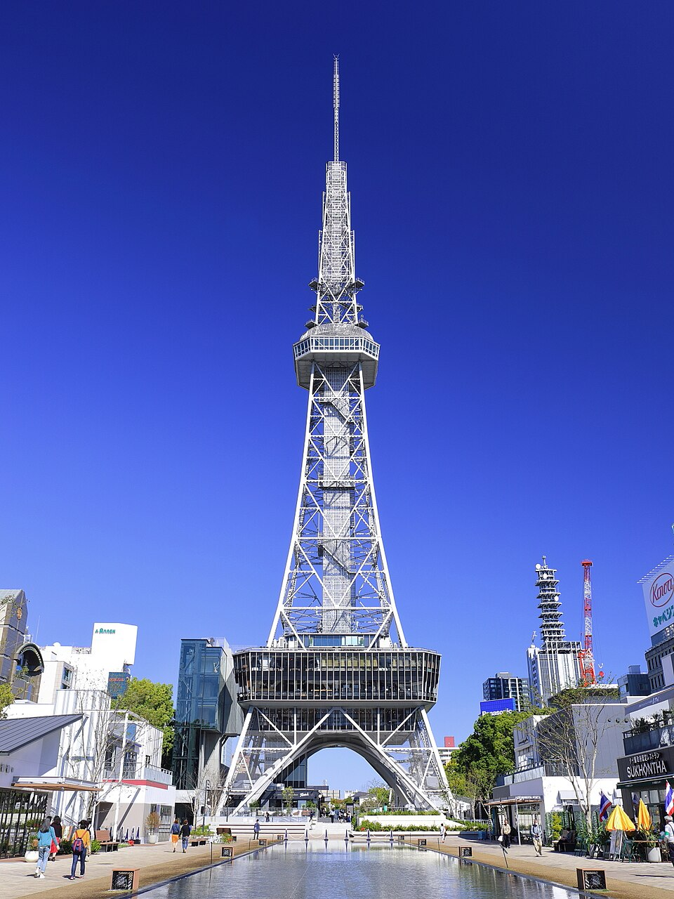中部電力MIRAI TOWER＋久屋大通公園本圖展示此景點；複合景點以其中一處具代表性的景色配圖。作者：Tomio344456作品：View_of_Nagoya_TV_Tower_(3),_Nishiki_Naka_Ward_Nagoya_2020.jpg原圖與來源 · CC BY-SA 4.0縮小尺寸；網頁以 4:3 裁切顯示。裁切顯示版本沿用原圖授權。
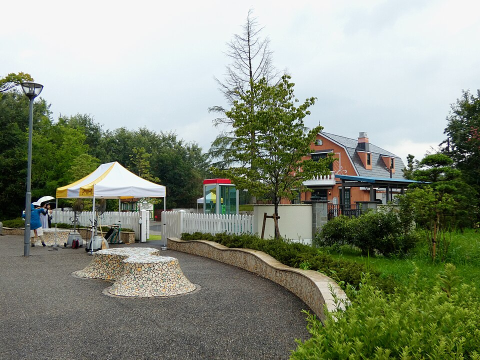吉卜力公園吉卜力公園的青春之丘區域。作者：Kyu3作品：Hill of Youth in Ghibli Park - 1.jpg原圖與來源 · CC BY-SA 4.0縮小尺寸；網頁以 4:3 裁切顯示。裁切顯示版本沿用原圖授權。
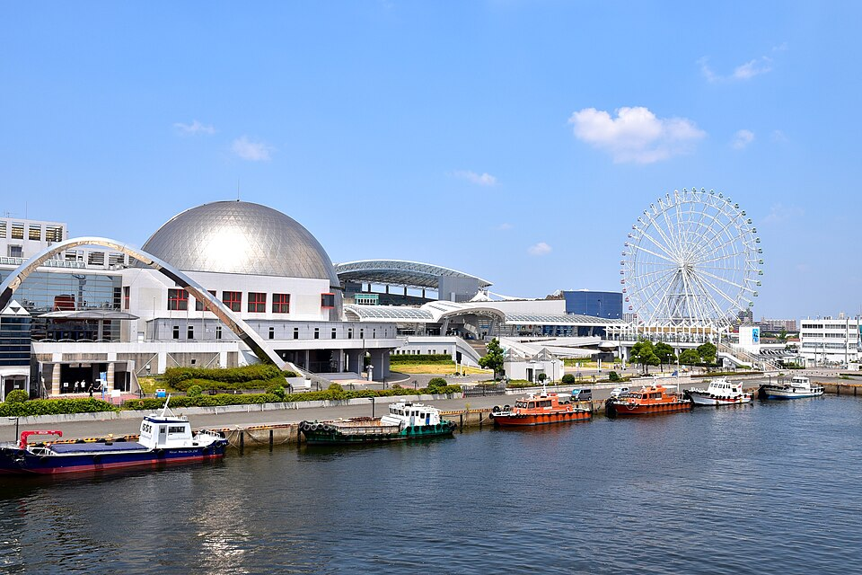名古屋港水族館本圖展示此景點；複合景點以其中一處具代表性的景色配圖。作者：Bariston作品：Port_of_Nagoya_Public_Aquarium1.jpg原圖與來源 · CC BY-SA 4.0縮小尺寸；網頁以 4:3 裁切顯示。裁切顯示版本沿用原圖授權。
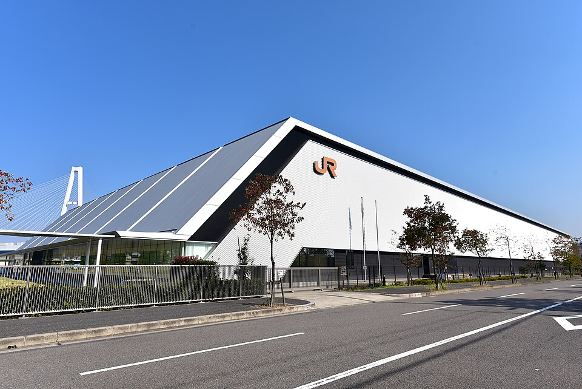磁浮・鐵道館本圖展示此景點；複合景點以其中一處具代表性的景色配圖。作者：Bariston作品：SCMaglev_and_Railway_Park_in_Aichi_Prefecture.jpg原圖與來源 · CC BY-SA 4.0縮小尺寸；網頁以 4:3 裁切顯示。裁切顯示版本沿用原圖授權。
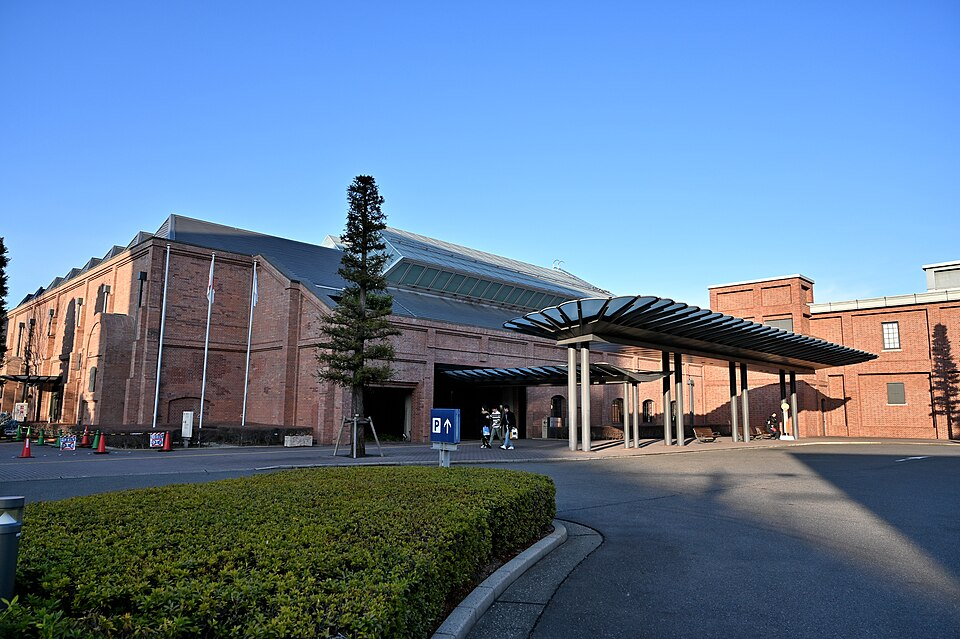豐田產業技術紀念館本圖展示此景點；複合景點以其中一處具代表性的景色配圖。作者：Bariston作品：Toyota_tecno_museum.jpg原圖與來源 · CC BY-SA 4.0縮小尺寸；網頁以 4:3 裁切顯示。裁切顯示版本沿用原圖授權。
犬山城＋城下町本圖展示此景點；複合景點以其中一處具代表性的景色配圖。作者：Tomio344456作品：Inuyama_Castle_(1),_Kitakoken_Inuyama_Inuyama_City_2023.jpg原圖與來源 · CC BY-SA 4.0縮小尺寸；網頁以 4:3 裁切顯示。裁切顯示版本沿用原圖授權。
博物館明治村本圖展示此景點；複合景點以其中一處具代表性的景色配圖。作者：Bariston作品：Meijimura1.jpg原圖與來源 · CC BY-SA 4.0縮小尺寸；網頁以 4:3 裁切顯示。裁切顯示版本沿用原圖授權。
常滑陶瓷散步道本圖展示此景點；複合景點以其中一處具代表性的景色配圖。作者：Bariston作品：Yakimonosanpomichi17.JPG原圖與來源 · CC BY-SA 4.0縮小尺寸；網頁以 4:3 裁切顯示。裁切顯示版本沿用原圖授權。
香嵐溪本圖展示此景點；複合景點以其中一處具代表性的景色配圖。作者：Bariston作品：Kōrankei.jpg原圖與來源 · CC BY-SA 4.0縮小尺寸；網頁以 4:3 裁切顯示。裁切顯示版本沿用原圖授權。
岡崎城本圖展示此景點；複合景點以其中一處具代表性的景色配圖。作者：Evelyn-rose作品：Okazakijo-3-cropped.jpg原圖與來源 · CC0縮小尺寸；網頁以 4:3 裁切顯示。裁切顯示版本沿用原圖授權。
日本樂高樂園本圖展示此景點；複合景點以其中一處具代表性的景色配圖。作者：Tomio344456作品：LEGOLAND_JAPAN_Entrance,_Kinjofuto_Minato_Ward_Nagoya_2022.jpg原圖與來源 · CC BY-SA 4.0縮小尺寸；網頁以 4:3 裁切顯示。裁切顯示版本沿用原圖授權。
伊勢神宮・內宮本圖展示此景點；複合景點以其中一處具代表性的景色配圖。作者：N yotarou作品：Naiku_04.jpg原圖與來源 · CC BY-SA 4.0縮小尺寸；網頁以 4:3 裁切顯示。裁切顯示版本沿用原圖授權。
伊勢神宮・外宮本圖展示此景點；複合景點以其中一處具代表性的景色配圖。作者：N yotarou作品：Geku_003.jpg原圖與來源 · CC BY-SA 4.0縮小尺寸；網頁以 4:3 裁切顯示。裁切顯示版本沿用原圖授權。
托福橫丁＋御祓町本圖展示此景點；複合景點以其中一處具代表性的景色配圖。作者：Oilstreet作品：Okage_Yokocho01.JPG原圖與來源 · CC BY 2.5縮小尺寸；網頁以 4:3 裁切顯示。裁切顯示版本沿用原圖授權。
二見興玉神社・夫婦岩本圖展示此景點；複合景點以其中一處具代表性的景色配圖。作者：Alpsdake作品：Meoto-iwa.jpg原圖與來源 · CC BY-SA 4.0縮小尺寸；網頁以 4:3 裁切顯示。裁切顯示版本沿用原圖授權。
鳥羽水族館本圖展示此景點；複合景點以其中一處具代表性的景色配圖。作者：Miyuki Meinaka作品：Toba_Aquarium_front_view_2019.jpg原圖與來源 · CC BY-SA 4.0縮小尺寸；網頁以 4:3 裁切顯示。裁切顯示版本沿用原圖授權。
御木本珍珠島本圖展示此景點；複合景點以其中一處具代表性的景色配圖。作者：Miyuki Meinaka作品：Mikimoto_Pearl_Island_from_Toba_Auqarium.jpg原圖與來源 · CC BY-SA 3.0縮小尺寸；網頁以 4:3 裁切顯示。裁切顯示版本沿用原圖授權。
英虞灣・橫山展望台本圖展示此景點；複合景點以其中一處具代表性的景色配圖。作者：Good-balance作品：横山展望台.jpg原圖與來源 · CC BY-SA 3.0縮小尺寸；網頁以 4:3 裁切顯示。裁切顯示版本沿用原圖授權。
伊賀上野城＋忍者博物館本圖展示此景點；複合景點以其中一處具代表性的景色配圖。作者：The original uploader was T@ka at Japanese Wikipedia.作品：Igauenozyo.jpg原圖與來源 · CC BY-SA 3.0縮小尺寸；網頁以 4:3 裁切顯示。裁切顯示版本沿用原圖授權。
名花之里名花之里的冬季燈海，歷史活動實拍，非當季燈飾預告。作者：Hustvedt作品：Nabana no Sato Illumination.jpg原圖與來源 · CC BY-SA 3.0縮小尺寸；網頁以 4:3 裁切顯示。裁切顯示版本沿用原圖授權。
長島溫泉樂園本圖展示此景點；複合景點以其中一處具代表性的景色配圖。作者：Hideyuki KAMON from Takarazuka / 宝塚市, Hyogo / 兵庫県, Japan / 日本作品：Nagashima_spa_land_skyview.jpg原圖與來源 · CC BY-SA 2.0縮小尺寸；網頁以 4:3 裁切顯示。裁切顯示版本沿用原圖授權。
鈴鹿賽道樂園鈴鹿賽道及樂園摩天輪的歷史實拍；非即時景況。作者：shiraga from Osaka, JAPAN作品：Suzuka Circuit 2006.jpg原圖與來源 · CC BY 2.0縮小尺寸；網頁以 4:3 裁切顯示。裁切顯示版本沿用原圖授權。
熊野古道・馬越峠本圖展示此景點；複合景點以其中一處具代表性的景色配圖。作者：Alpsdake作品：Kumano Kodo (Magose pass route s2).JPG原圖與來源 · CC BY-SA 4.0縮小尺寸；網頁以 4:3 裁切顯示。裁切顯示版本沿用原圖授權。